땅을 알고,
땅과 일합니다
경기도 이천시 백사면 · 조사료 생산 전문
벌크피드영농조합법인은 단순한 사료작물 재배를 넘어, 작부체계의 발상을 바꾸어 온 영농조합입니다. 봄에 IRG를 파종해 하계작물로 키우고, 부숙된 축분을 흙으로 되돌리는 경축순환 농업을 통해 화학비료를 줄이고 토양의 건강을 지킵니다.
2025년 전국 62개 경영체가 참가한 농림축산식품부 주최 품질경연대회에서, 국립축산과학원· 서울대학교의 사전 시료 분석과 외관 평가를 거쳐 단 한 곳에 주어지는 최우수상을 수상했습니다. 전국 사료작물 면적의 36%를 차지하는 전남도가 5개 부문을 휩쓴 압도적인 환경 속에서, 경기도의 단일 영농조합이 최고의 자리에 올랐습니다.
- 대표
- 최병무
- 소재지
- 경기도 이천시 백사면
- 사업영역
- 조사료 생산 · 사료작물 재배 · 축산농가 공급
- 주요 작물
- IRG(이탈리안 라이그라스) · 옥수수사일리지
- 경영 가치
- 경축순환 농업 · 화학비료 절감 · 품질 일관성
- 종자 정책
- 국내품종 사료용 종자 사용 — 한국 풍토 적합 · 식량주권 기여
- 참여 정책
- 전략작물직불제 — 논 활용 하계 사료작물 생산
- 영문명
- Bulk Feed Farm Corporation
대한민국이 인정한 품질
농림축산식품부가 주최하고 농협경제지주가 주관한 2025년 전국 사료작물 품질경연대회에서 전국 62개 출품작 중 단 한 곳에 주어지는 최우수상을 수상했습니다. 국립축산과학원과 서울대학교의 사전 시료 분석, 그리고 농림축산식품부와 외부 전문가로 구성된 품질평가위원회의 외관 평가를 통해 검증된 결과입니다.
장관상
2년 만에 특별상에서 최우수상으로
전국 사료작물 품질경연대회는 2008년부터 이어진 17년 권위 대회입니다. 벌크피드영농조합법인은 같은 대회에서 2023년 특별상에 이어 2025년 최우수상까지, 단계적으로 입증된 품질을 인정받았습니다.
초지조사료학회장상
국내품종 사료용 옥수수로 출품. 수입 종자가 아닌 국산 종자로 한국 풍토에 맞는 고품질 조사료를 생산할 수 있음을 입증했습니다. 총 9개 수상 기관 중 한 곳으로 선정.
농림축산식품부 장관상
전국 62개 출품작 중 단 한 곳에 주어지는 최고의 영예. 시상식에서는 우수사례 발표자로 직접 무대에 올랐습니다.
두 단계의 검증을 통과한 품질
이 수상은 외관 평가만의 결과가 아닙니다. 국립축산과학원과 서울대학교의 과학적 시료 분석부터, 농림축산식품부 품질평가위원회의 외관 평가까지 — 두 단계를 모두 통과한 객관적 인증입니다.
시료 분석 평가
전국 62개 경영체에서 수거된 시료에 대해 간이 분석과 화학 분석을 진행합니다. 영양 성분, 수분 함량, 단백질·섬유소 비율 등 정량적 데이터로 검증합니다.
외관 품질 평가
품질평가위원회가 사람의 오감으로 평가합니다. 네 가지 핵심 항목을 종합해 최종 등수를 결정합니다.
시상식 무대에서 발표한
대한민국의 모범 사례
시상식은 단순히 상을 받는 자리가 아니었습니다. 최우수상 수상자에게는 전국 조사료 경영체 앞에서 직접 우수 사례를 발표할 무대가 주어집니다. 최병무 대표가 직접 마이크 앞에 섰습니다.
IRG(이탈리안 라이그라스)와 같은 동계사료작물의 파종 시기를 경기지역의 벼 작부체계에 맞춰 봄 파종으로 변경해 하계작물로 생산하는 방법을 적용했습니다.
이 방식은 경축순환 농업을 가능하게 해, 겨울철 화학비료 사용을 줄이고, 부숙된 축분을 활용한 고품질 조사료 생산에 기여했습니다.
시상식 직후, 신종광 경기도 축산정책과장은 "지속 가능한 농업 실천과 고품질 조사료 생산을 위해 조사료 생산·지원에 관한 다양한 정책과 사업을 추진할 계획"이라고 밝혔습니다. 경기도가 정책적으로 조사료 산업을 키우는 시점에, 벌크피드영농조합법인이 전국 모범 사례로 떠올랐습니다.
작부체계의 발상을 바꾸다
국내 조사료 생산의 관행을 뒤집은 핵심 기술 ― 동계작물이었던 IRG를 하계로 재편한 봄 파종 방식. 경기지역의 벼 작부체계와 정합하면서, 화학비료에 의존하지 않는 흙을 만듭니다.
가을 파종 IRG (동계작물)
- 벼 수확 후 가을에 파종
- 경기지역 벼 작부체계와 충돌
- 겨울철 화학비료에 의존
- 품질 변동 가능성
봄 파종 IRG (하계작물)
- 벼 작부체계에 완벽히 정합
- 경축순환 농업 실현
- 부숙된 축분을 친환경 비료로 활용
- 겨울철 화학비료 사용량 감소
- 전국 최우수 품질 인증
경축순환 농업
축산농가에서 발생하는 부숙 축분을 작물 재배의 자원으로 환원합니다. 농업과 축산이 닫힌 고리를 이루는 지속가능한 순환 모델을 구축합니다.
화학비료 절감
축분 비료화를 통해 겨울철 화학비료 사용량을 구조적으로 줄입니다. 토양 미생물과 흙의 건강함을 지키는 가장 자연스러운 방법입니다.
품질 일관성
국립축산과학원 시료 분석으로 검증된 최우수 등급. 축산농가가 신뢰할 수 있는 일관된 사료 품질을 약속드립니다.
한 줌의 조사료에 담긴 한 해
땅이 회복되는 시간, 씨앗이 자라는 시간, 베어지고 발효되는 시간. 벌크피드의 조사료는 한 해의 흐름을 따라 정성껏 만들어집니다.
-
01
경축순환 자재 준비
축산농가에서 나온 부숙 축분을 비료화하여 토양으로 환원합니다. 흙이 먼저 회복합니다.
-
02
봄 파종 (IRG)
벼 작부체계에 맞춰 봄에 IRG를 파종, 하계작물로 키워냅니다.
-
03
생육 모니터링
생육 단계별 외관과 영양 성분을 관리, 일관된 품질을 만들어냅니다.
-
04
수확 · 사일리지화
적기 수확과 발효 공정으로 영양가를 최대한 보존합니다.
-
05
축산농가 공급
최우수 품질의 조사료를 축산현장으로 직접 공급합니다.
언론에 소개된 벌크피드
대지에서 보낸 한 해
여명의 들녘부터 밤을 잇는 수확까지. 봄에 파종해 하계로 키운 사료작물이 베어지고, 발효되고, 축산현장으로 향하는 벌크피드의 실제 작업 현장입니다.
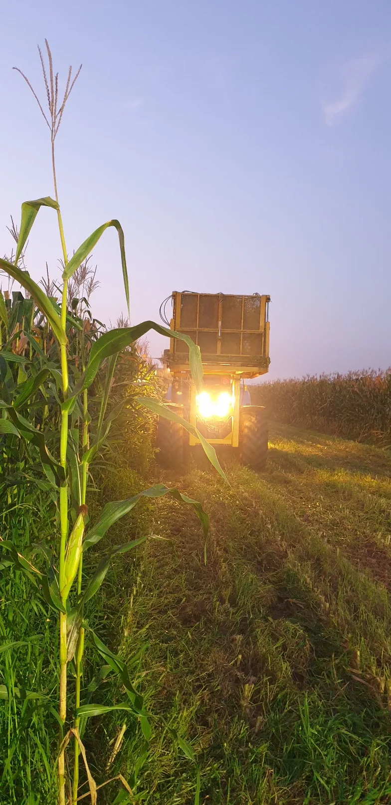
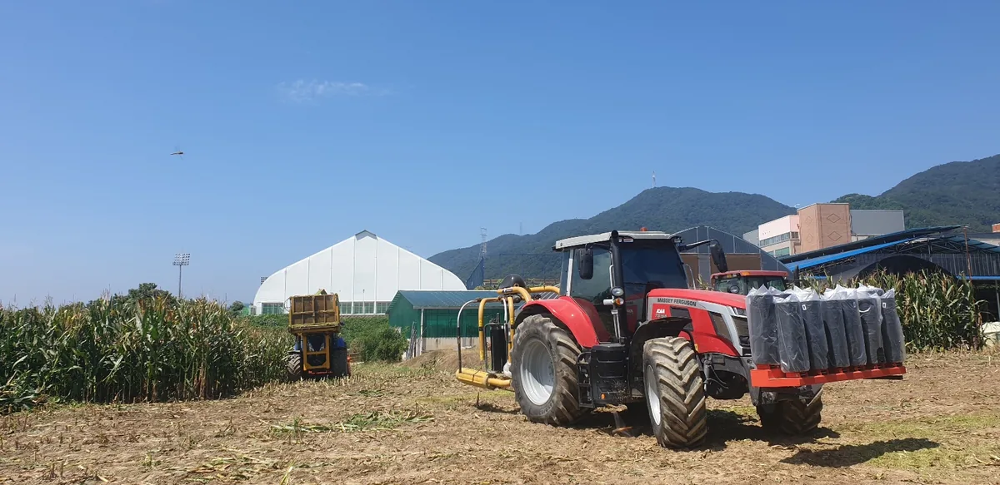
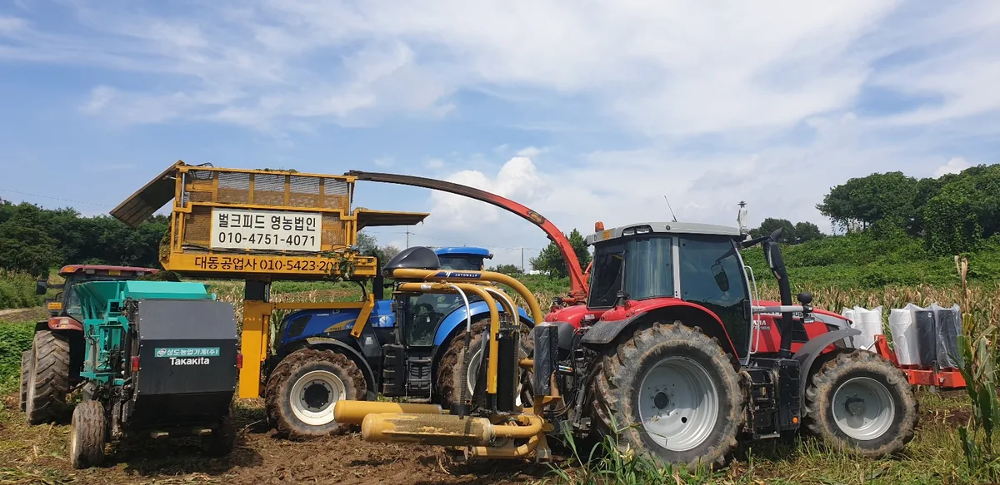
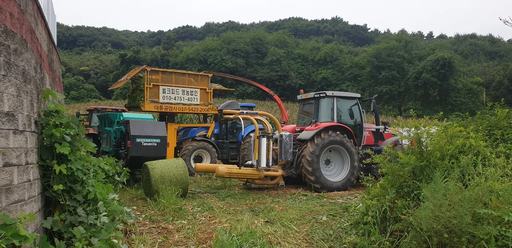
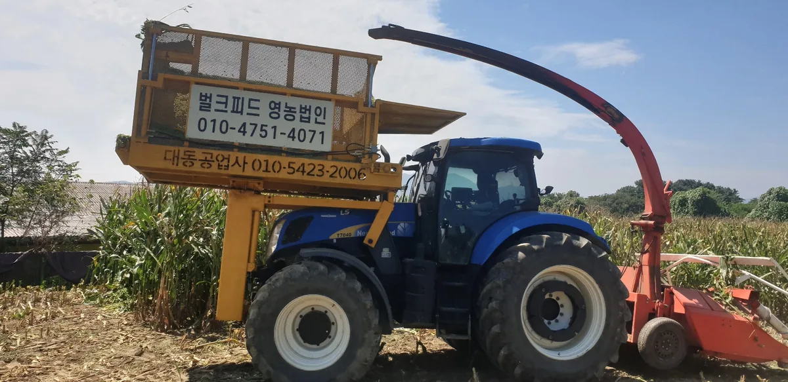
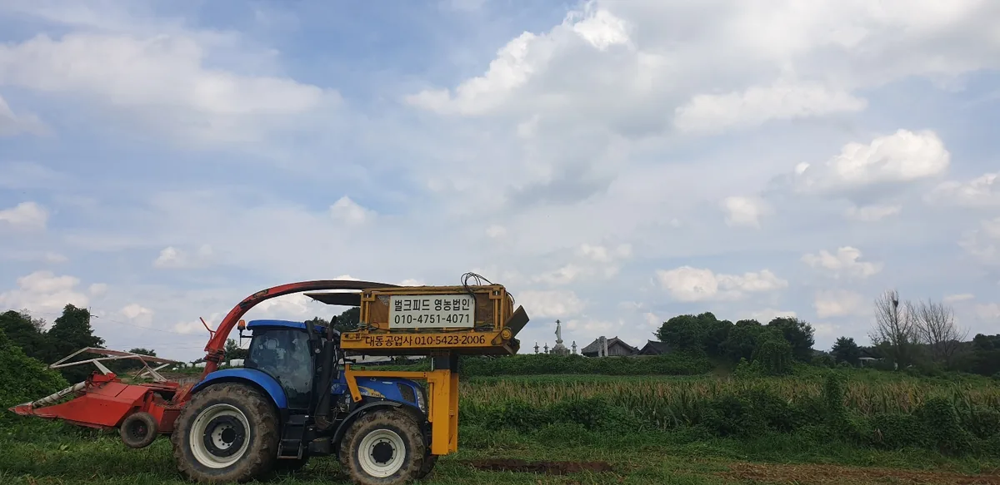
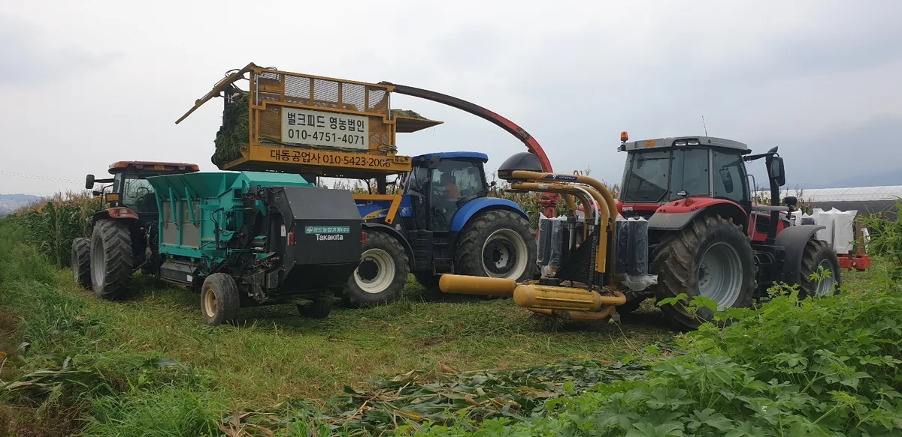
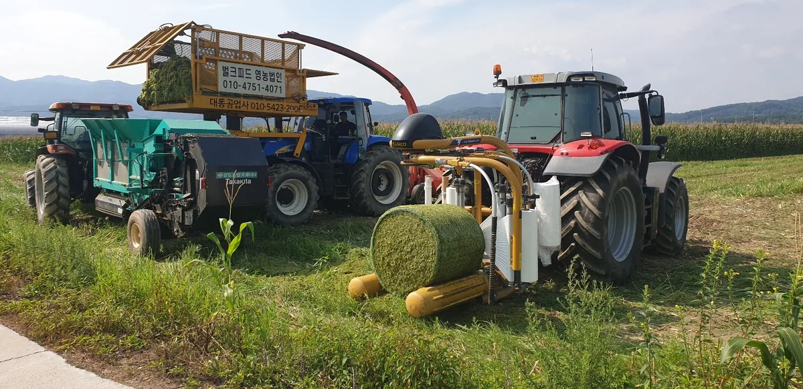
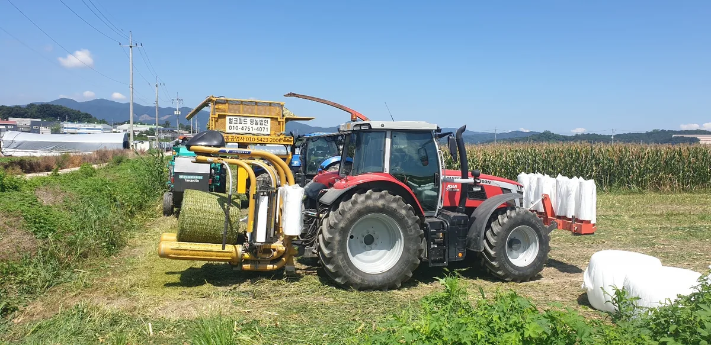
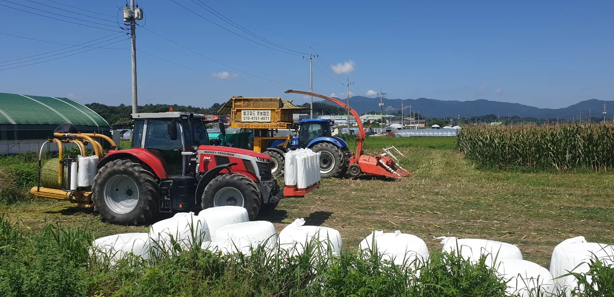
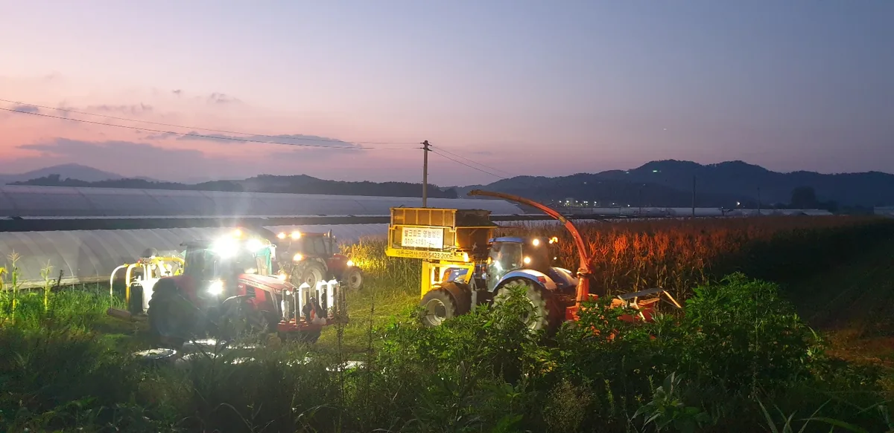
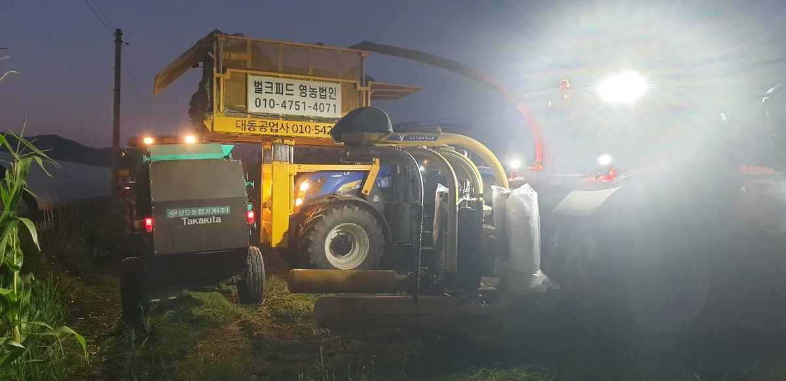
함께 일하실 분을 기다립니다
조사료 공급, 협업 제안, 견학 문의는 언제든 연락 주십시오. 대지의 일을 진심으로 함께할 분을 환영합니다.